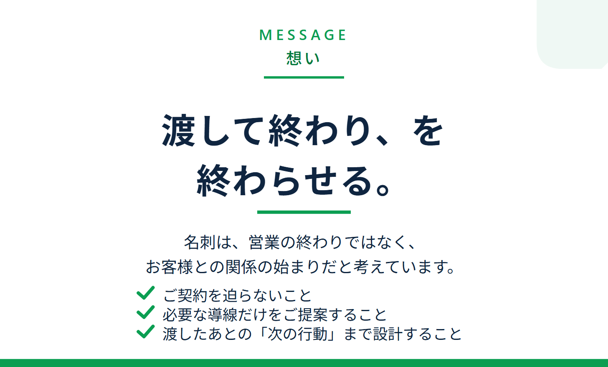
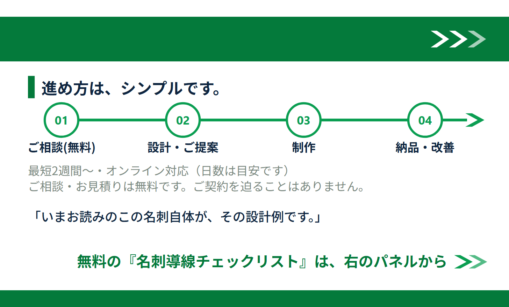

名刺交換のあと、
見込み客を取りこぼしていませんか。
メイシルは、名刺 × 公式LINE × 無料オファー × 問い合わせ導線（導線＝お客様が次の行動に進む道すじ）をワンセットで設計する「コンバージョン名刺」制作サービスです。名刺を渡して終わりにせず、LINE登録・無料オファー・サービス理解・問い合わせへつながる「次の行動につながる導線」をお作りします。
配信は月数回程度。不要になればブロックでいつでも解除できます。
※「LINE」はLINEヤフー株式会社の商標です。

これが、メイシルの3つ折り名刺。
納品仕様そのままの3面折りデモです（氏名・連絡先はサンプルの架空データ）。
閉じれば1枚の名刺、開けば人となり・想い・導線が伝わります。


平面で見る（A面／B面の全パネル）
名刺を渡しても、その先がない。
交流会や商談で名刺を交換したのに、そこから何も生まれない。
その原因は、名刺交換のあとに「次の行動につながる導線」がないことです。
後日、連絡が来ない
渡しただけで終わってしまい、その後の接点がつくれない。せっかくの出会いが、取りこぼし・機会損失になっていませんか。
相手が覚えていない
時間が経つと想起されず、名前も顔も思い出してもらえない。いざ必要になったときに、選ばれる存在になれていますか。
自分から追客しづらい
営業っぽくなるのが苦手で、こちらからフォローできない。追いかけないうちに、関係がそのまま途切れてしまう。
名刺は「自己紹介で終わるもの」ではなく、見込み客との関係が始まる入口に変えられます。
メイシルがつくる、6ステップの導線。
名刺を受け取った相手が、迷わず次の行動へ進めるように。
渡した瞬間から相談・予約までを、ひとつの道すじにつなげます。
-
名刺を受け取る
交流会・商談・来店などの場面で、コンバージョン名刺を手渡します。渡す瞬間の一言まで含めて設計します。
-
無料オファーに興味を持つ
「相談前に使えるチェックリストをLINEでお渡ししています」——受け取る理由（無料オファー）で、行動のきっかけを作ります。
-
QRコードから公式LINEに登録
名刺のQRから、使い慣れたLINEでかんたんに登録。連絡先入力の手間がなく、相手のハードルを下げます。
-
LINEで無料オファーを受け取る
登録直後に無料オファーを自動でお届け。あいさつメッセージから自然に価値提供が始まります。
-
サービス内容・実績を確認
リッチメニューや配信で、サービス理解が深まる導線へ。相談前に「何を頼めるか」が伝わります。
-
問い合わせ・相談・予約へ進む
理解が進んだうえで、問い合わせ・相談・予約の受け皿へ。名刺が「関係が始まる入口」に変わります。
名刺は営業の終わりではなく、見込み客との関係が始まる入口です。メイシルは、その入口から相談までの道すじをまとめて設計します。サービスの詳細はこちら →
名刺1枚に、仕組みを詰め込む。
メイシルがお作りするのは、単なる名刺ではありません。
関係づくりから次の行動までを支える「仕組み」を、名刺1枚に組み込みます。
自然につながる仕組み
名刺を渡すだけで、LINE登録・無料オファーへ自然に誘導。押し売り感なく、次の接点が生まれます。
LINEで関係を継続できる
お役立ち情報や特典を継続的にお届け。連絡待ちではなく、こちらから信頼を育てられます。
無料オファーで価値提供
登録する理由（無料オファー）を用意することで、信頼を獲得し、サービスへの興味・理解を深めます。
相談・予約につながりやすい
サービス理解が進むことで、問い合わせ・予約といった具体的な行動につながりやすくなります。
関係が可視化できる
登録数や反応をデータで把握。「次にどこを直せば問い合わせに近づくか」が見えるようになります。
営業・集客の時間を削減
整えた導線が自動で働くことで、追客の手間を減らせます。仕組みが関係づくりの一部を担います。
業種別の、活用イメージ。
名刺やカードを渡す機会があり、LINE登録後に案内したいサービスがある。
そんな方に、業種に合わせた無料オファーと導線を設計します。
相談前の不安を、先回りして解く
- 無料オファー例
- 相談前チェックリスト／よくある質問集／初回相談の進め方ガイド
- 導線の流れ
- LINE登録 → 無料オファー → サービス理解 → 相談・問い合わせ
検討中の見込み客と、つながり続ける
- 無料オファー例
- ライフプラン診断／物件探しのポイント集／お役立ち情報レポート
- 導線の流れ
- LINE登録 → 無料オファー → サービス理解 → 相談・問い合わせ
初回来店の一歩を、後押しする
- 無料オファー例
- お悩み別セルフケアガイド／施術の流れ・効果ガイド／お得な特典クーポン
- 導線の流れ
- LINE登録 → 無料オファー → サービス理解 → 予約・来店
大量の接点を、商談へ束ねる
- 無料オファー例
- 業界レポート・事例集／サービス資料ダウンロード／課題チェックリスト
- 導線の流れ
- LINE登録 → 無料オファー → サービス理解 → 問い合わせ・商談
名刺のあとが、見えるようになる。
これまでは、名刺を渡した後に何が起きたか分かりませんでした。
導線を整えると、どこまで進んだかが数字で見えるようになります。
名刺配布からアポまで、どこで止まっているかが見える（例）
※上記の数値はすべて説明のための「例」であり、成果を保証するものではありません。数字を見る目的は分析ではなく、「次にどこを直せば問い合わせに近づくか」を見つけるためです。
必要なものだけを選ぶ、3つの構成。
すべての機能を入れる必要はありません。目的・予算・必要な導線に合わせて、
無理のない構成からご提案します。まずは全体像の目安をご覧ください。
シンプル構成
まずは名刺からLINE導線まで
5〜10万円前後
制作費（本体）の目安。印刷費・外部ツール利用料は別途。
- 名刺制作
- QR設置
- LINE基本導線
- 無料オファー
標準構成
問い合わせ導線まで整える
10〜20万円前後
制作費（本体）の目安。印刷費・外部ツール利用料は別途。
- 名刺制作
- LINE基本導線
- 無料オファー設計
- リッチメニュー
- 問い合わせ導線
本格構成
追客・予約まで自動で
20万円〜
内容により変動。制作費（本体）の目安。印刷費・外部ツール利用料は別途。
- 3つ折り名刺
- 無料オファー制作
- リッチメニュー
- シナリオ配信
- 予約・相談導線
※金額はすべて目安・例であり、確定金額ではありません。印刷費・外部ツール利用料は別途です。正式金額はヒアリング後に制作範囲を整理してご提示します。成果を保証するものではありません。
名刺を、始まりに。
無料相談のゴールは契約ではなく、必要な導線と予算感の整理です。
オンライン対応・ご契約を迫りません。まずは現状のお話からお聞かせください。
いきなりの相談に迷う方は、
名刺導線チェックリスト
から。LINE友だち追加で受け取れます。
配信は月数回程度。不要になればブロックでいつでも解除できます。
※「LINE」はLINEヤフー株式会社の商標です。